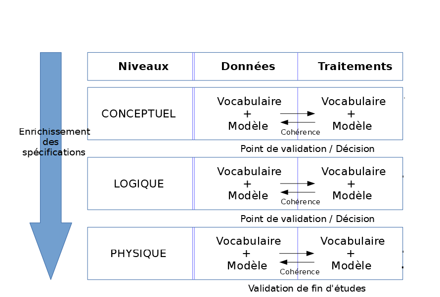

Introduction aux Bases de données

Définitions
lebigdata.fr :
“Une base de données (que nous nommerons BD par commodité) est une collection d’informations organisées afin d’être facilement consultables, gérables et mises à jour. ”
Définitions
Wikipedia :
“Une base de données est un « conteneur » stockant des données”
Définitions
infoWebMaster :
“En informatique, une base de données (Abr. : « BD » ou « BDD ») est un lot d'informations stockées dans un dispositif informatique. Les technologies existantes permettent d'organiser et de structurer la base de données de manière à pouvoir facilement manipuler le contenu et stocker efficacement de très grandes quantités d'informations.”
Les types de Bases de données
- Les bases de données hiérarchiques
- Les bases de données réseau
- Les bases de données relationnelles
- Les bases de données Objet
- Les bases de données NoSQL
Les Bases de données Hiérarchiques

Les Bases de données Réseau

Les Bases de données Relationnelles

Les Bases de données Objets

La méthodologie MERISE
La méthode Merise est une méthode d'analyse, de conception et de réalisation de systèmes d'informations.
Les étapes de réalisation d'un SI
Les Modèles Merise Les plus connus
- MCD : Modèle Conceptuel de Données
- MLD : Modèle Logique de Données
- MCT : Modèle Conceptuel de Traitements
- MOT : Modèle Organisationnel de Données
MCD
Le MCD est une représentation simplifiée du système à informatiser : Représentation de l'information d'une manière compréhensible par tout le monde.
MCD
Dans un MCD le système à informatiser est perçu comme un ensemble d'objets en relation : Description statique du système d'informations à l'aide du modèle Entité-Association
Les éléments du MCD
- Les entités
- Les associations
- Les attributs
- Les cardinalités